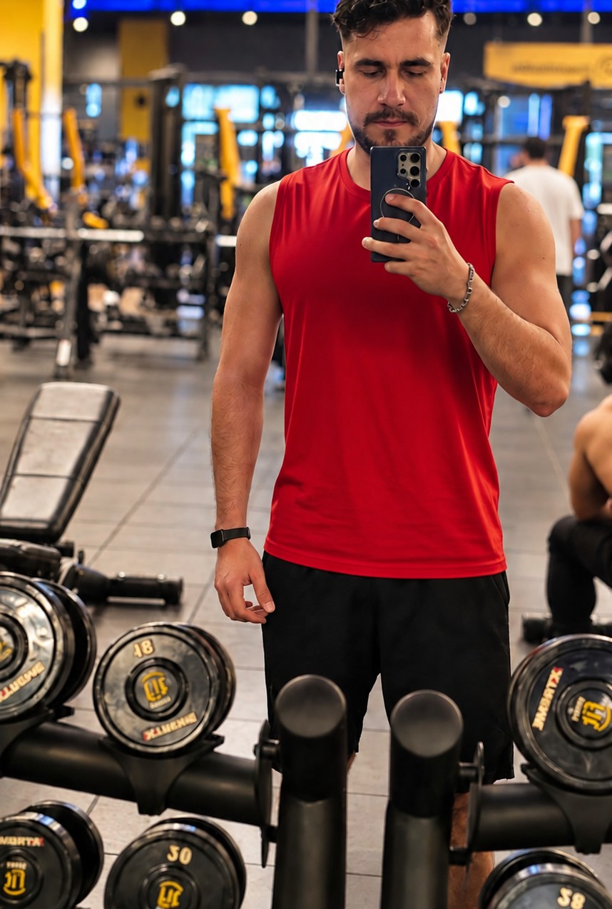

El mito del
Trabajo
seguro
Opinión
“Encuentra un trabajo seguro y permanece en él toda tu vida”.
ReflexiónUn empleo puede ofrecer estabilidad, pero ningún camino está completamente libre de riesgos ni de cambios.
¿Cuántas de tus creencias estás confundiendo con la realidad?
“Encuentra un trabajo seguro y permanece en él toda tu vida”.
ReflexiónUn empleo puede ofrecer estabilidad, pero ningún camino está completamente libre de riesgos ni de cambios.
“Tienen una casa grande. Deben ser ricos”.
ReflexiónLo que alguien posee no revela necesariamente su patrimonio, sus deudas ni su verdadera situación financiera.

“Tiene músculos grandes. Debe estar sano”.
ReflexiónLa apariencia física no permite conocer por completo el estado de salud de una persona.
“No hay suficiente dinero para que todos seamos ricos”.
Las oportunidades pueden crearse, pero la riqueza no está garantizada. Aprender a generar valor, administrar recursos y tomar decisiones informadas puede ampliar tus posibilidades.
“Las personas que cometen errores son estúpidas”.
ReflexiónCometer un error no define tu inteligencia. Lo importante es aprender, corregir y mejorar tus decisiones.
“Él nunca venderá a un precio tan bajo”.
Reflexión: Lo que supones sobre las decisiones de otra persona no sustituye una conversación ni una negociación real.
“Ella nunca saldrá conmigo”.
Reflexión: Suponer la respuesta de alguien puede cerrarte una puerta antes de intentarlo. Expresa tu interés con respeto y acepta su decisión.